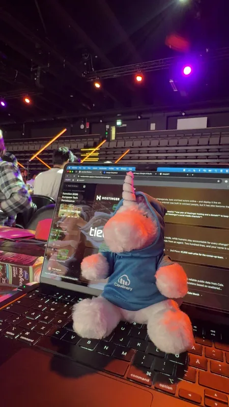
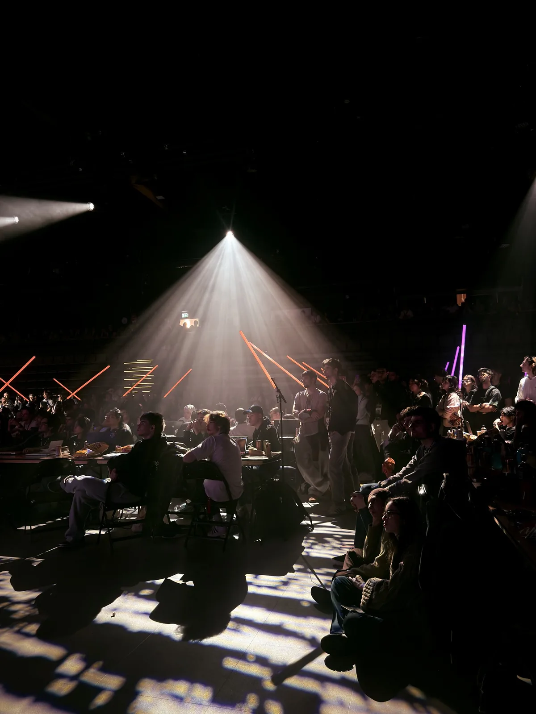

Junction 2026 in Espoo, a 48-hour hackathon. Team Gemini 4 Brain Cells built Shill or Chill: it traces memes to their source and spots coordinated spread.
Shill or Chill
Won the Oxylabs challenge. 3rd place in the Hostinger challenge. My part: the coordination detector and the Bluesky ingest pipeline.
receipt Oxylabs on LinkedIn: "Meet Shill or Chill, built by Justinas Launikonis, Kirill Jegosin, Temuulen Norovpel and Valtteri Pertilä."

Night one, reading the briefs

Junction 2026, Espoo
Prototype D · scroll down: the sea turns to night, the light sticks from Junction reflect in the water · move the cursor to ripple the reflections